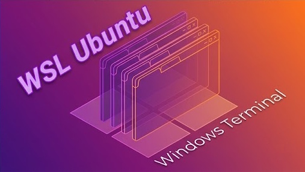
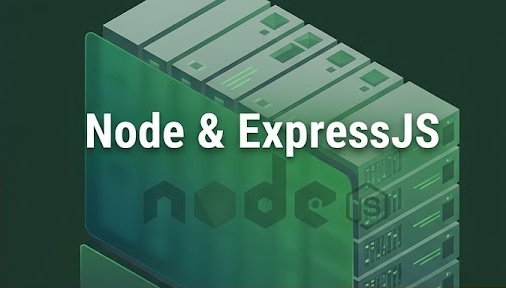

Lộ trình học Back-end
Hầu hết các websites hoặc ứng dụng di động đều có 2 phần là Front-end và Back-end. Front-end là phần giao diện người dùng nhìn thấy và có thể tương tác. Back-end là nơi xử lý dữ liệu và lưu trữ. Vì vậy, nhiệm vụ của lập trình viên Back-end là phân tích thiết kế dữ liệu, xử lý logic nghiệp vụ của các chức năng trong ứng dụng.
Tại Việt Nam, lương trung bình cho lập trình viên Back-end vào khoảng 19.000.000đ / tháng.
Các khóa học có thể chưa đầy đủ, F8 vẫn đang nỗ lực hoàn thiện trong thời gian sớm nhất.
1. Tìm hiểu về ngành IT
Để theo ngành IT - Phần mềm cần rèn luyện những kỹ năng nào? Bạn đã có sẵn tố chất phù hợp với ngành chưa? Cùng tham quan các công ty IT và tìm hiểu về văn hóa, tác phong làm việc của ngành này nhé các bạn.
Kiến Thức Nhập Môn IT
Miễn phí
Để có cái nhìn tổng quan về ngành IT - Lập trình web các bạn nên xem các videos tại khóa này trước nhé.
Xem khóa học2. HTML và CSS
Để học web Front-end chúng ta luôn bắt đầu với ngôn ngữ HTML và CSS, đây là 2 ngôn ngữ có mặt trong mọi website trên internet. Dù bạn có theo Back-end thì công việc của bạn nhiều khi vẫn cần phải ghép dữ liệu với HTML, CSS.

HTML CSS Pro
2.500.000đ 1.299.000đ
Khóa học HTML CSS Pro phù hợp cho cả người mới bắt đầu, lên tới 8 dự án trên Figma, 300+ bài tập và flashcards, tặng 3+ games...
Xem khóa học3. Ngôn ngữ lập trình
Có rất nhiều ngôn ngữ để bạn có thể làm việc với Back-end, tuy nhiên bạn không cần phải học tất cả. Bạn chỉ cần tập trung vào 1 ngôn ngữ là có thể làm việc tốt. Tại đây chúng ta sẽ bắt đầu với ngôn ngữ lập trình Javascript.

JavaScript Pro
3.299.000đ 1.399.000đ
Khóa học JavaScript Pro này là nền tảng vững chắc để học tiếp React, Vue.js, Node.js, v.v. Mục tiêu là giúp bạn có thể làm chủ...
Xem khóa học4. Sử dụng Ubuntu/Linux
Cách làm việc với hệ điều hành Ubuntu/Linux qua Windows Terminal & WSL. Khi đi làm, nhiều trường hợp bạn cần nắm vững các dòng lệnh cơ bản của Ubuntu/Linux.

Làm việc với Terminal & Ubuntu
Miễn phí
Sở hữu một Terminal hiện đại, mạnh mẽ trong tùy biến và học cách làm việc với Ubuntu là một bước quan trọng trên con đường trở...
Xem khóa học5. Libraries and Frameworks
Một ứng dụng Back-end hiện đại có thể rất phức tạp, việc sử dụng code thuần (tự tay code từ đầu) không phải là một lựa chọn tốt. Vì vậy các Libraries và Frameworks ra đời nhằm đơn giản hóa, tiết kiệm thời gian và tiền bạc để nhanh chóng tạo ra được sản phẩm cuối cùng.

Node & ExpressJS
Miễn phí
Học Back-end với Node & ExpressJS framework, hiểu các khái niệm khi làm Back-end và xây dựng RESTful API cho trang web.
Xem khóa học